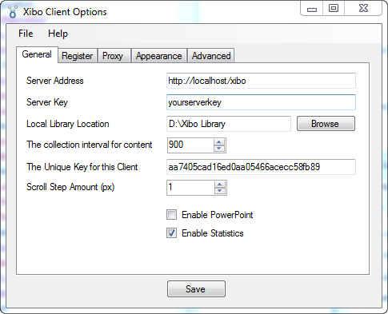
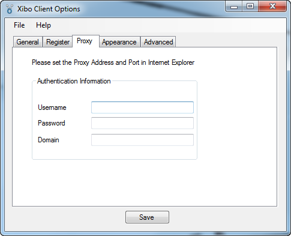
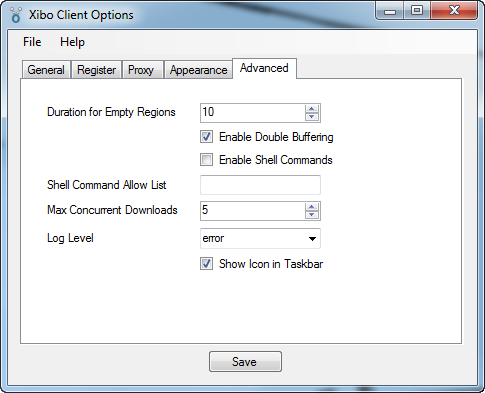
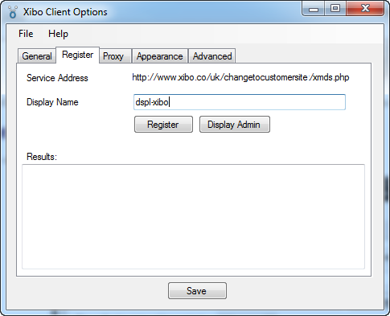

Options - General

- Server Address: Fill in the address of your Xibo server address. If your Xibo server is on the same machine as the client,
enter "http://localhost/xibo". If Xibo server is installed on a different computer, enter the IP address or hostname of the
machine the Xibo server is installed on - for example "http://192.168.0.4/xibo" or "http://www.my-server.com/xibo" or similar.
- Server Key: Enter your server key in the "Server Key" box. If you cannot remember the key you can find it in the
Settings dialogue on the Administration->Settings menu in the
web interface on the server.
- Local Library Location: defaults to a folder called "Xibo Library" It is used to cache content from the Xibo server so that
the client can continue to play if the connection to the Xibo server is lost. If you want to change to a different folder, use
the "Browse" button to choose an alternative folder. The library folder must be given write access right to the Xibo client.
Note that you must NOT use the server's library location (if it is on the same PC as the client or via a file share) - The collection interval for content: is the interval in seconds that the client will poll the server for new content. The more
frequent the collections, the quicker the client will update when changes are made on the server - but at the expense of bandwidth
and possibly minor freezes in things like scrolling text when the collection happens. We don't recommend values lower than 60 seconds.
- The unique key for this client: is a unique identifier for this client machine. It is generated from a mix of Windows system identifiers and
your hardware. If you are installing for the first time, there is no need to amend this value. If you are changing hardware or want to have
two clients using the same server account then you can edit the key as required.
- Scroll Step Amount (px): is the number of pixels scrolling text will advance each time scrolling text items are told to move. You should
leave this set to 1px for smooth viewing.
- Enable Powerpoint: Tick the box if you have the full version of PowerPoint 2003 or later installed and want to use PowerPoint media items.
Be sure to read the notes on Powerpoint setup here: Windows Modifications.
- Enable Statistics: Tick the box if you want the client to send statistics back to the Xibo server. This will generate alot of data that will be
stored in the Xibo database. If you don't have any specific use for statistics, we recommend you turn this option off.
Click the "Save" button.
Options - Proxy
If you use a proxy server to access your Xibo server, go to the "Proxy" server tab and fill in the details for your network, then click "Save". Make sure to set your proxy information in Internet Explorer too.

Options - Apperance
Click "Apperance" tab to set the client display window size, and the offsets from the screen origin if so required.
When the specified client display window size i.e. width & height is different from the original layout intended size, some of the content will be cropped. e.g. embbedded html, linked html, dataset table etc.
You may use the "Offset X' i.e. set equal to the primary display width, to place the client diplay window on an extended display monitor.

The default Xibo Splash screen is display when the client is first launch. You may specify your own Splash Image by entering the image filename in the "Override Splash Screen" box.
Options - Advanced

Options - Register
Finally go to the "Register" display tab.

Optionally rename the client by entering a name in the "Display Name" box. It defaults to the hostname of the PC. Click the "Register" button.
You should see a message "Display registered and awaiting licensing". If you don't get that message, ensure you entered the correct URL for the Xibo server, and that your server key is entered correctly.